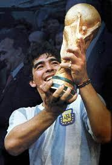
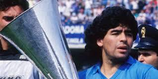
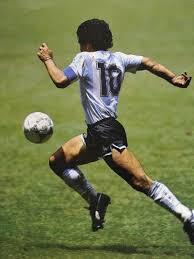
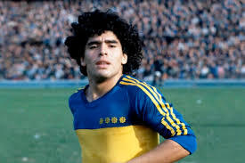
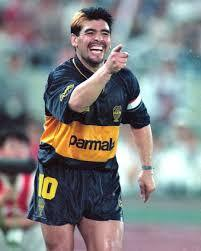

.png)
 (1).jpg)
Diego Armando Maradona fue un futbolista argentino, considerado uno de los mejores de la historia. Nació en 1960 en Villa Fiorito, Buenos Aires, y rápidamente se destacó en el fútbol por sus habilidades extraordinarias.
A los 22 años, Maradona dio el salto al fútbol europeo para jugar en el FC Barcelona, y poco después fue transferido al Napoli de Italia, donde vivió la época más memorable de su carrera.
En Napoli, se convirtió en una leyenda local al llevar al equipo a ganar sus primeros títulos en la Serie A y a consagrarse en el fútbol europeo.
Maradona se ganó el cariño y la devoción de la gente de Nápoles, quienes lo veían no solo como un futbolista, sino como un símbolo de esperanza y orgullo para la ciudad.
Uno de los momentos más emblemáticos de su carrera fue el Mundial de 1986 en México. Durante el torneo, Maradona demostró su gran habilidad y liderazgo, llevándose a la selección argentina al título mundial.
En los cuartos de final, en el recordado partido contra Inglaterra, Maradona anotó dos goles que pasarían a la historia. Uno de ellos fue una gran obra de habilidad individual, considerado uno de los mejores goles de todos los tiempos.
Ese Mundial consolidó su estatus como uno de los más grandes jugadores de la historia del fútbol.
Tras su éxito en el campo, Maradona continuó siendo una figura pública querida en Argentina y en todo el mundo. Además de su carrera como futbolista, trabajó como entrenador en varios equipos, incluyendo la dirección técnica de la selección argentina en el Mundial de 2010.
Siempre apasionado y auténtico, su vida inspiró a muchas generaciones y dejó una huella imborrable en el mundo del fútbol.
Diego Maradona falleció el 25 de noviembre de 2020, dejando un legado de pasión, talento y dedicación al deporte. Su figura sigue viva en los corazones de sus seguidores y en la historia del fútbol, donde siempre será recordado como un símbolo de entrega y genialidad en el campo de juego.
Uno de sus momentos mas emblematicos y recordados siempre va a ser el gol contra los Ingleses, que fue catalogado como uno de los mejores goles del siglo y fue el momento en donde se gano uno de sus muchos apodos como el: "Barrilete Cosmico", de la famosa frase: "De que planeta viniste? Barillete Cosmico" haciendo alusion a lo que Diego habia echo esa tarde no era humano.
Todavia hay mas pero estos son los mas reconocidos, si te interesa saber mas en detalle aca te dejo un link Titulos totales de Diego Maradona
Aquí hay algunas imágenes famosas de Maradona:
    